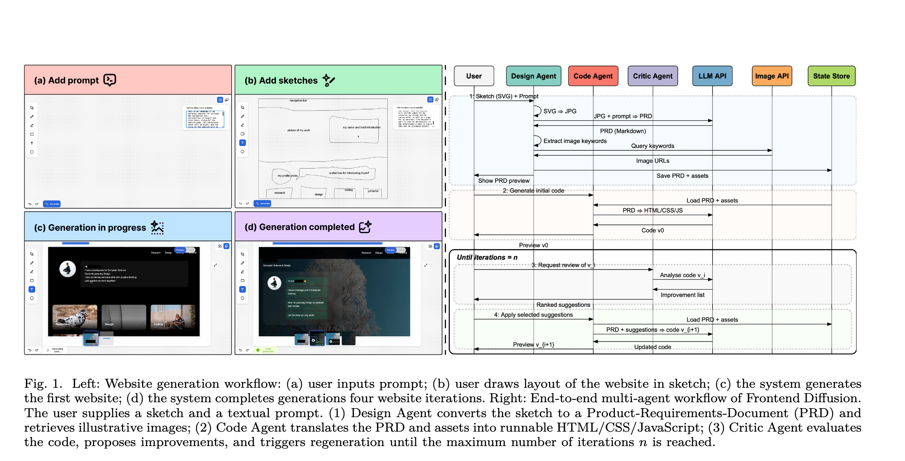
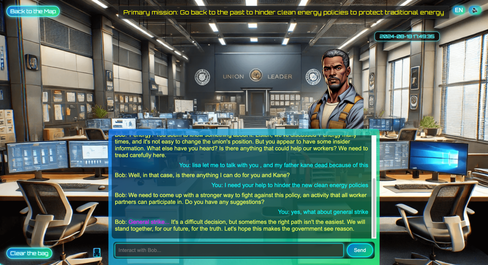
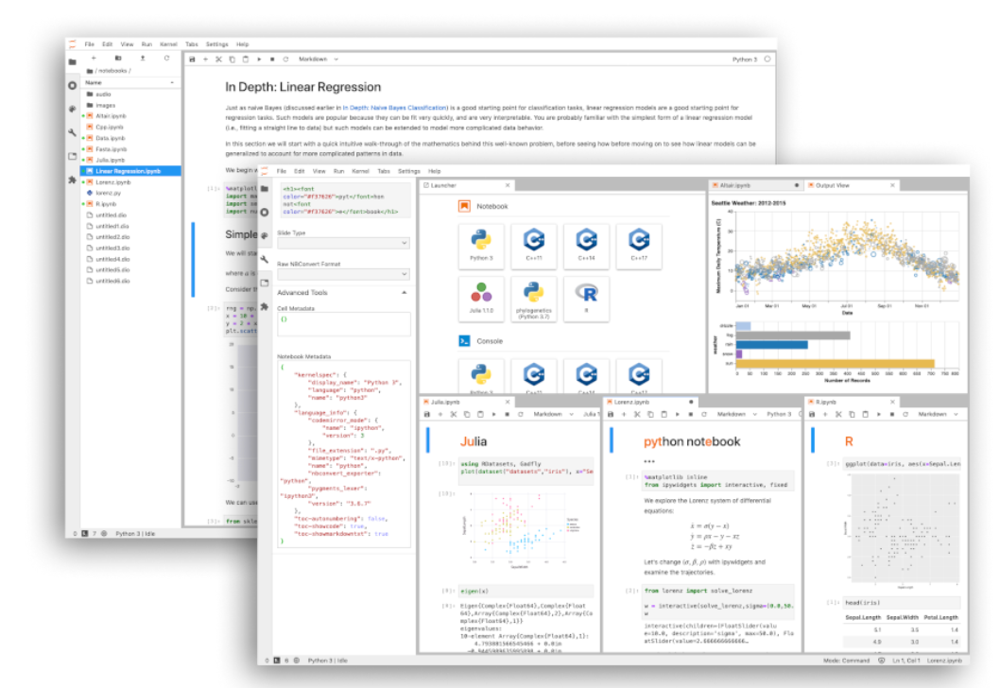
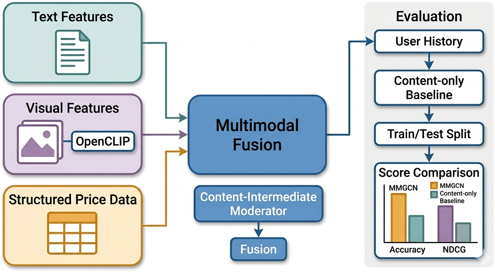

Hi, I’m Carol Zhang. I’m an incoming CS Ph.D. student at Florida State University, where I will be advised by Prof. Yifang Wang. I received my M.S. in Computer Science from the University of California, San Diego (UCSD), and my B.S. from China Jiliang University (CJLU) & Auckland University of Technology (AUT).
My main research interests focus on AI for Social Good and AI Agents. I have designed and developed conversational agents leveraging NLP techniques for behavior analysis and intervention.
Previously, I have worked with Prof. Steven Dow at UCSD Design Lab, and with Dr. Ray LC at HK CityU, resulting in a co-first authored paper published at CHI’24 and a first-authored paper at CHI’25.
I am happy to collaborate or just chat about research, my email is qiz065@ucsd.edu.
Papers
Note: * indicates equal contribution; † indicates the corresponding author.

Frontend Diffusion: Empowering Self-Representation of Researchers and Designers with Multi-agent System
IEEE Symposium on Visual Languages and Human-Centric Computing 2025

Can AI Prompt Humans? Multimodal Agents Prompt Players' Game Actions and Show Consequences to Raise Sustainability Awareness
CHI Conference on Human Factors in Computing Systems 2025

Eternagram: Probing Player Attitudes in Alternate Climate Scenarios Through a ChatGPT-Driven Text Adventure
CHI Conference on Human Factors in Computing Systems 2024
Preprints

Projects

Classifying Applications, Structure, and Data Transformations in Jupyter Notebooks
An Exploratory Study
